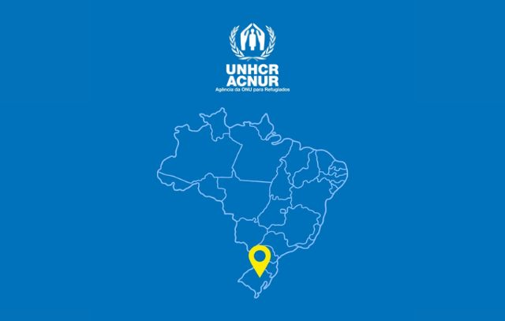
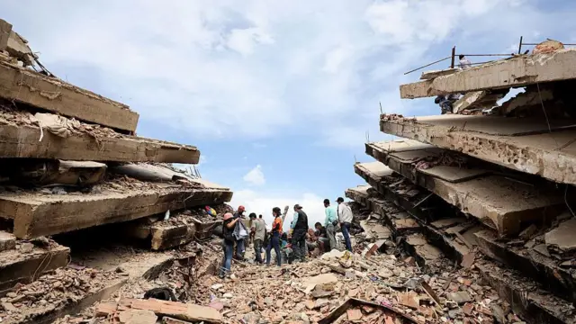

Bruno Guimarães erra penâlti e...
Brasil cai no mata-mata! Entenda as causas
Brasil cai no mata-mata! Entenda as causas
Obras iniciando sem previsão de fim? Entenda a motivação
Entenda como o papel da ACNUR é importante

Como andam os sobreviventes?
